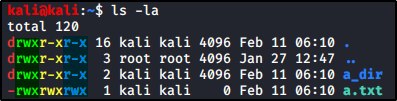

Let's start with and example, see left colored columns:


Legend:
r = Read
w = Write
x = Execute
Show Order:
r,w,x (The dash is shown for the unset permission: E.G. “.” and “..” have no Group writing permission)
Permissions Order (see colored columns):
"UGO":
File Type (If specified, as an example: “d” stands for directory)
User (Owner)
Group (Owner's Group)
Others
Permissions as numbers (for "chmod" command):
0 – No permission
1 – Execute
2 – Write
3 – Write & Execute (2+1)
4 – Read
5 – Read & Execute (4+1)
6 – Read & Write (4+2)
7 – Read, Write, & Execute (4+2+1)
Permissions as letters (for "chmod" commands):
Syntax (Legend):
u = User (Owner)
g = Group (Owner's Group)
o = Others
chmod (ugo+rwx) (file) # With “+”, you add permissions
chmod (ugo-rwx) (file) # With “-”, you remove permissions
(Remember: “root” account have all permissions and can do litteraly everything !!)
Basic user management commands:
(For pentesting reasons: Usually /tmp folder has full access)
Show permissions on files/directories:
ls -la # List all files and “-l” show permissions
Add an user:
adduser bob # Create an user called “bob”
Change an user password:
passwd # Change your password
passwd bob # Change bob's password (you actually need the permissions to do that)
Change user:
su bob # su = Switching User, switch to bob user (you may asked to provide his password)
SuperUser Do Commands:
sudo “command” # You gain the permission in /etc/sudoers to execute the “command”
Change permission to file/directories:
(See "Permissions as numbers" written before !!)
chmod 777 file.txt # Change the permission for “file.txt” to “rwx” for User, Group and Others
chmod 755 file.txt # Change the permission for “file.txt” to “rwx” for User and “r-x” for Group and Others
chmod 000 file.txt # Change the permission for “file.txt” to “---” for User, Group and Others
(See "Permissions as letters" written before !!)
chmod u+x file.txt # Add to “User” the execute permission for “file.txt”
chmod u-x file.txt # Remove to “User” the execute permission for “file.txt”
chmod uo-wr file.txt # Remove to “User” and “Others” the writing and reading permission for “file.txt”
chmod ugo+rwx file.txt
Configuration files for users:
cat /etc/passwd # Show all the users
cat /etc/shadow # Show all users' passwords in a hashed format
cat /etc/sudoers # Show the list of all sudoers (superuser do)